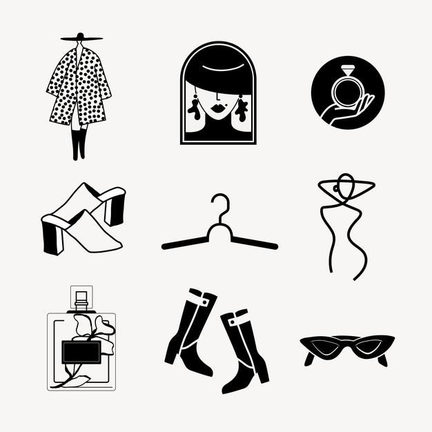

In recent years, the fashion industry has witnessed the rise of a phenomenon known as fast fashion. Fast fashion refers to the rapid production of inexpensive clothing collections that mimic current trends and are quickly brought to market. While this trend has its appeal, it comes with a host of environmental and social consequences that cannot be ignored.
make your closet
Sustainable
buy less
END EXCESSIVE CONSUMPTION
buy from sustainable brands
BRANDS THAT TREAT THEIR WORKERS RIGHT AND AVOID USING MATERIALS THAT COULD AFFECT THE ENVIRONMENT
buy better quality
LESS BURDAN ON OUR WALLETS AND ENVIRONMENT FOR LONG RUN
avoid buying new
BUY SECOND HAND, SWAP, RENT CLOTHES
don't throw out your clothes
RE-USE, RE-SELL, RE-PAIR, RE-CYCLE, DONATE